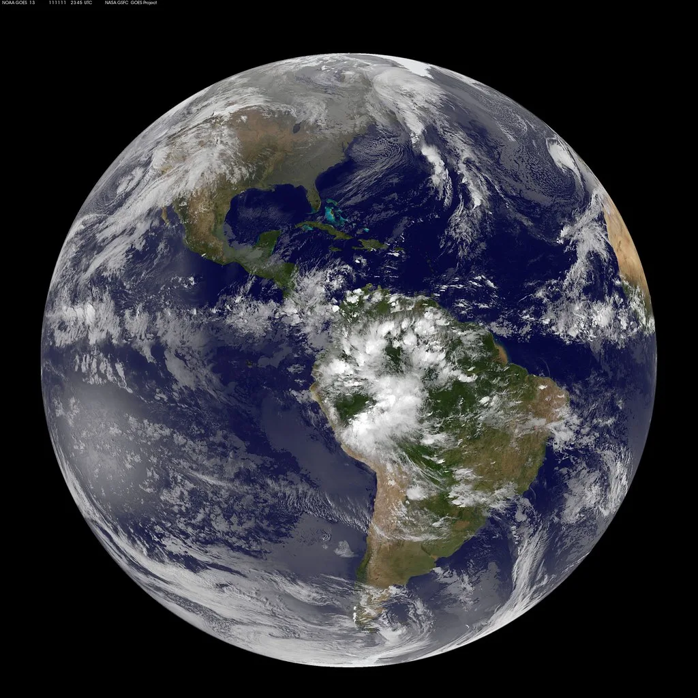

구글의 국내 고정밀지도 국외반출 요청에 대한 정부 심의가 또다시 보류됐다. 국토교통부 산하 국토지리정보원이 주관하는 국외반출협의체는 11일 회의를 열어 구글에 내년 2월 5일까지 보완 신청서를 제출하도록 요구하고, 그 기간 동안 심의 자체를 보류하기로 했다. 지난 2월 구글이 1대5000 수치지형도 형태의 고정밀 국가기본도에 대한 반출을 신청한 지 9개월이 지났지만, 최종 결론은 다시 해를 넘겨 미뤄지게 됐다.
이번 보류의 핵심 이유는 구글이 대외적으로 밝힌 입장과 실제 제출한 신청 서류의 내용이 서로 맞지 않는다는 점이다. 국지원은 심의 과정에서 구글의 대외적 의사 표명과 신청 서류 간 불일치로 인해 정확한 심의가 어려웠다고 설명했다. 구체적으로 구글은 보안이 민감한 시설의 좌표를 비공개로 처리하는 등 여러 안전조치를 취하겠다고 공개적으로 약속했지만, 이런 조치를 의무화하는 내용이 실제 제출 서류에는 명문화돼 있지 않았던 것으로 전해졌다.
협의체 안팎에서는 서류에 명문화되지 않은 약속은 법적 구속력이 없다는 점이 이번 보류 결정에 큰 영향을 끼쳤다는 분석이 나온다. 설령 반출을 허용하더라도 구글이 약속한 보안 조치를 반드시 지켜야 할 법적 근거가 없다면, 나중에 조치가 이행되지 않았을 때 정부가 이를 강제할 방법이 마땅치 않다는 우려가 작용한 것으로 보인다. 이 때문에 협의체는 구글 측에 약속한 조치를 신청 서류 자체에 명시적으로 반영해 다시 제출하라고 요구한 셈이다.
국내 정밀지도의 국외반출 문제는 2007년 구글이 처음 반출을 요청한 이래 20년 가까이 이어진 오래된 쟁점이다. 그동안 정부는 안보상의 이유로 군사시설 등 민감 지역의 좌표가 그대로 해외 서버에 넘어갈 수 있다는 점을 들어 신중한 입장을 지켜왔다. 반면 구글 측과 외국인 관광객을 포함한 이용자들은 국내에서도 해외와 동일한 수준의 정밀한 길찾기·내비게이션 서비스를 이용할 수 있어야 한다며 반출 필요성을 주장해 왔다. 올해 들어서도 협의체는 지난 5월과 8월 두 차례에 걸쳐 처리 기한을 각각 60일씩 연장하며 결론을 뒤로 미뤄온 바 있다.

업계에서는 이번 보류로 심의가 최소 3개월 가까이 더 늦춰지게 됐다고 보고 있다. 구글이 내년 2월 초까지 보완 서류를 제출하더라도, 협의체가 이를 다시 검토하고 관계 부처 간 협의를 거쳐야 하는 만큼 실제 최종 결정까지는 추가 시간이 더 소요될 가능성이 크다. 그간 반출 여부를 둘러싸고 '허용해야 관광객 편의가 늘어난다'는 주장과 '구글 종속이 심화된다'는 반론이 팽팽하게 맞서 온 만큼, 이번 보완 요구가 양측의 입장 차이를 좁히는 계기가 될지는 미지수다.
정부 관계자들은 이번 결정이 반출 자체를 거부하는 취지는 아니라는 점을 강조하고 있다. 안보에 민감한 정보를 보호할 수 있는 장치가 문서상으로 분명히 확인된다면 반출 논의를 이어갈 수 있다는 입장이다. 결국 구글이 내년 2월까지 어떤 수준의 보완 서류를 내놓느냐에 따라, 20년 가까이 이어진 이 쟁점이 해를 넘겨서라도 새로운 국면을 맞을지 가늠할 수 있을 것으로 보인다.